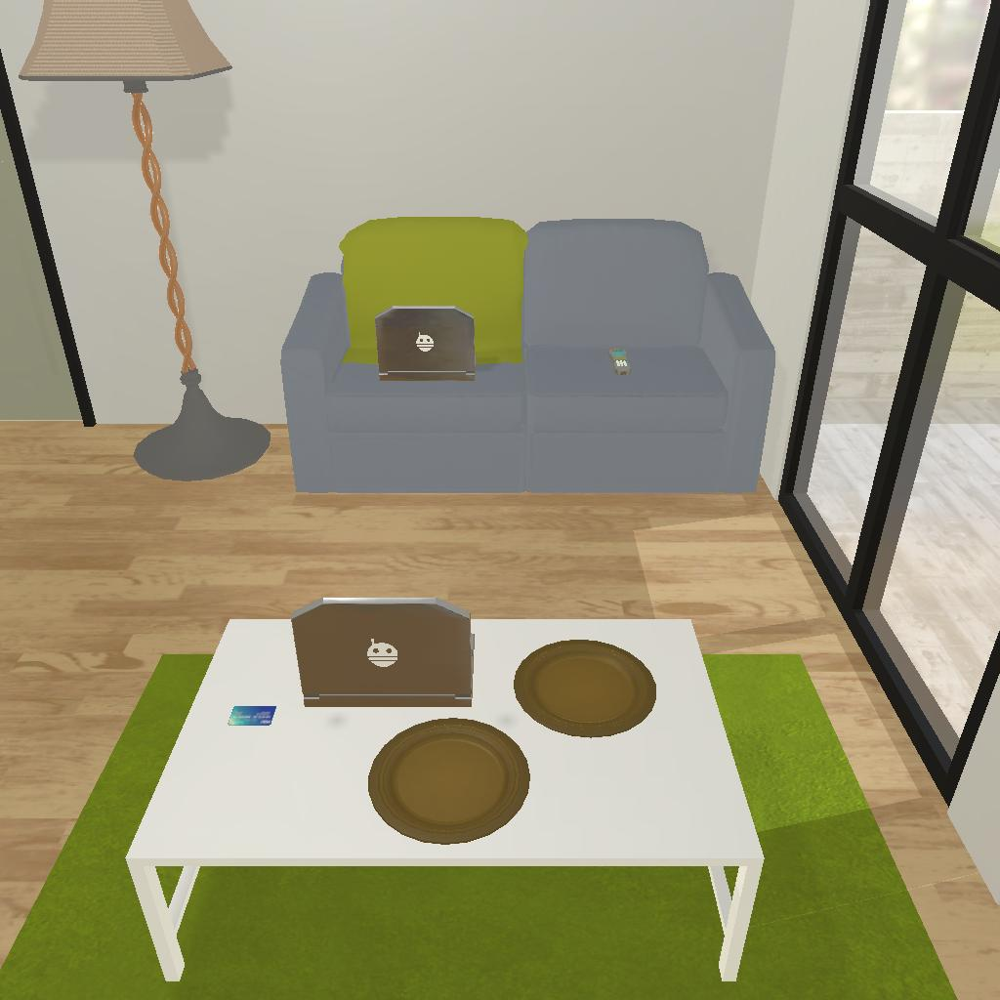

---------------------------------------------------------task: 4---------------------------------------------------------
--------------------------------------------------------------------------------------------------------------------------------------------------------------------
--------------------------------------------------------------------------------------------------------------------------------------------------------------------
Step:--------------------------------------------------------------------------6-------------------------------------------------------------------------------
----------------------------------------
VLM Prompt:
**Task**
Please perform as an embodied AI agent. Our final objective is to look at statue under the floorlamp. Below is the plan for completing the task, the current observation, alongside historical data and admissible actions for the next step. Please determine the best action for the next step!
**Plan**
Below is a detailed step-by-step plan to complete the task.
1. Find a statue.
2. Pick up the statue.
3. Locate a floorlamp.
4. Turn on the floorlamp.
5. Stand under the floorlamp with the statue in hand.
6. Look at the statue while standing under the floorlamp.
**Current Observation**
Displayed is an image capturing the current position of the agent.
**History Information**
Displayed are the previous observations with their corresponding actions.
Current State 1:
1. Place: Unknown
2. Step Index in Plan: 1
3. Objects: Floorlamp, Armchair, Small Table, Small Object (potential statue)
4. Action: go to armchair 1
Current State 2:
1. Place: Unknown
2. Step Index in Plan: 1
3. Objects: Houseplant, Sidetable, Armchair, Small Object (potential statue)
4. Action: Take houseplant 1 from armchair 1
Current State 3:
1. Place: Room with houseplant and armchair
2. Step Index in Plan: 1
3. Objects: Houseplant, Armchair, Sidetable 1
4. Action: Go to sidetable 1
Current State 4:
1. Place: Room with a houseplant and armchair
2. Step Index in Plan: 2
3. Objects: Statue, Houseplant 1, Sidetable 1
4. Action: Put houseplant 1 in/on sidetable 1
Current State 5:
1. Place: Unspecified
2. Step Index in Plan: 4
3. Objects: Statue, Floorlamp
4. Action: Go to coffeetable 1
Current State 6:
1. Place: Unspecified
2. Step Index in Plan: Unspecified
3. Objects: Statue, Floorlamp, Coffeetable
4. Action: Go to coffeetable 2
**Admissible Actions**
(1): go to armchair 1
(2): go to sidetable 1
(3): go to garbagecan 1
(4): go to drawer 1
(5): go to sofa 1
(6): go to diningtable 1
(7): put houseplant 1 in/on coffeetable 2
(8): use floorlamp 1
(9): examine houseplant 1
**Analysis Guideline**
1. Analyze the **History Information** and determine our current step in the plan and our current place.
2. List all visible objects related to the task in the current observation.
3. Analyze the objects in the current observation based on the history and the requirements for the current step, and then determine if we can complete the step with the current observation.
4. Analyze and decide on the most appropriate action to take.
5. Summarize the analysis using the following format: "Analysis: [The summarization of the analysis], The Most Appropriate Action: (i which is the integer.): [Selected action]"
**Notes**
1. We must complete each step of the plan in order and cannot skip steps when the previous ones are not finished.
2. For "Go to" actions listed as "go to xxx [n]", interpret this as there are n distinct actions available: "go to xxx 1", "go to xxx 2", ..., "go to xxx n". Select one specific action from these options instead of using "go to xxx [n]".
3. If receptacles such as drawers, cabinets, and so forth are closed in the current observation, we may try to open them.
4. Pay attention to synonyms and ensure clarity in the terms used.
5. If there is no history available, we are at the first step and the current place is "Unknown".
6. The most appropriate action must be in the **Admissible Actions**, and we cannot generate a new action that is not in the **Admissible Actions**.
**Answer**
Please select the most suitable action by following the **Analysis Guideline**, keeping the above **Notes** in mind.
----------------------------------------
----------------------------------------
VLM Response:
Analysis: According to the History Information, we are currently at step 4 in the plan, which is to turn on the floorlamp. The current observation shows the floorlamp to the left. There are no other objects related to the task visible in the current observation. Since we have already located the floorlamp and the plan requires us to turn it on, we can complete this step with the current observation.
The Most Appropriate Action: (8): use floorlamp 1
----------------------------------------
----------------------------------------
>>> Refine VLM Response and Get Pure Action: use floorlamp 1
----------------------------------------
-----------------------------------------------------------------
Running time: 6.077146768569946 seconds
Total Money: 1.4643599999999997
-----------------------------------------------------------------
-----------------------------------------------------------------
Summarization Prompt:
**Context**
Analysis: According to the History Information, we are currently at step 4 in the plan, which is to turn on the floorlamp. The current observation shows the floorlamp to the left. There are no other objects related to the task visible in the current observation. Since we have already located the floorlamp and the plan requires us to turn it on, we can complete this step with the current observation.
The Most Appropriate Action: (8): use floorlamp 1
**Summary Format**
1. Place: [Specify the current location]
2. Step Index in Plan: [Dispkay the current step number in the plan before taking the current action]
3. Objects: [List the objects relevant to the task]
4. Action: [Describe the most appropriate action without the "(x)" and keep the integer of the object]
Please analyze the **Context** and summarize the analysis using the **Summary Format**.
-----------------------------------------------------------------
-----------------------------------------------------------------
Summarization Response:
1. Place: Unspecified
2. Step Index in Plan: 4
3. Objects: floorlamp
4. Action: use floorlamp 1
-----------------------------------------------------------------
-----------------------------------------------------------------
Text Observation:Nothing happens.
-----------------------------------------------------------------
UNSUCCEED